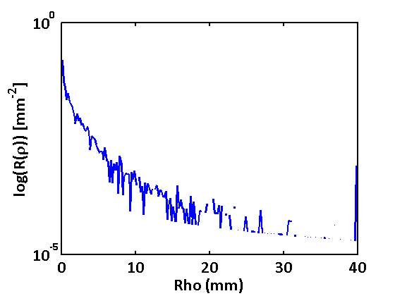

Monte Carlo Demo
Script for demoing use of VTS Monte Carlo tools within Matlab, to view the source code see vts_mc_demo.m
Contents
Example 1: run a simple Monte Carlo simulation with 1000 photons
Running simulation... Simulation complete! Run time: 14.229 seconds
Example 2: run Monte Carlo simulations for two absorption weighting types
with 1000 photons each and compare computation time
Running simulation... Simulation complete! Run time: 0.66404 seconds Running simulation... Simulation complete! Run time: 1.0963 seconds
Example 3: run a Monte Carlo simulation with a fully-customized input
(values used here are the class defaults)
Running simulation... Simulation complete! Run time: 0.91877 seconds